The Essence of Binary Search Trees
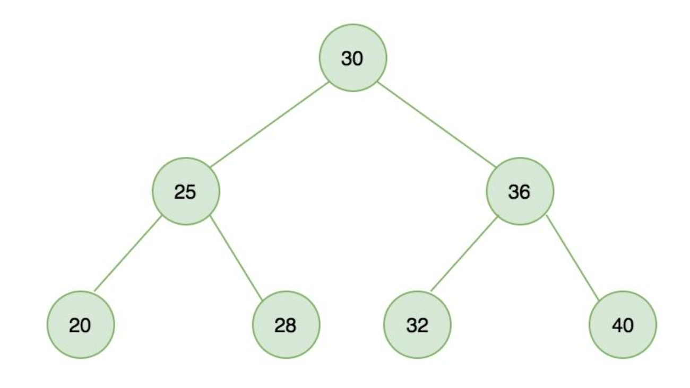
Introduction
I plan to write a series on tree-based data structures: binary search trees, red-black trees, skip lists, and B-trees. All of these data structures exist to solve the same fundamental problem: how to efficiently perform insertions, deletions, and searches on a large collection.
This is the first article in the series. We'll cover the foundation: the binary search tree.
The Basic Problem
How do you quickly find the phone number 13012345432 among ten million numbers?
The dumbest approach: linear scan, O(n).
The cleverest approach: hash table, O(1).
The Problem with Hash Tables
Hash tables have excellent query performance, but what's the catch?
How do you find all phone numbers between 13011111111 and 13022222222 among those ten million numbers?
This is a range query. The randomness of hash functions produces disorder, making fast range searches impossible.
Binary Search on Sorted Arrays
If the phone numbers are sorted, binary search can find any number in O(log n) time. For ten million numbers, you need at most 24 comparisons.
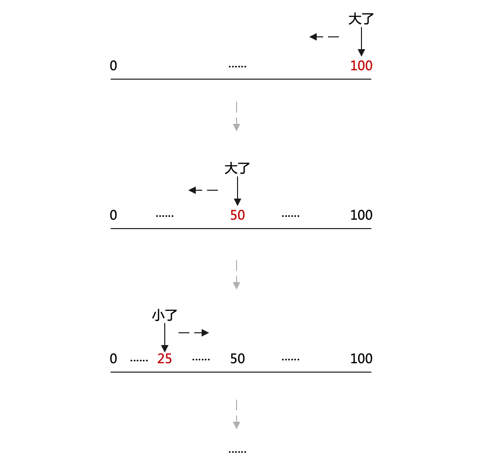
The Problem with Binary Search
Binary search requires an array. But arrays are unfriendly to insertions and deletions.
The Insight from Binary Search
Replace the array elements with a linked list. Replace the left and right sub-arrays with left and right pointers. This is the binary search tree.
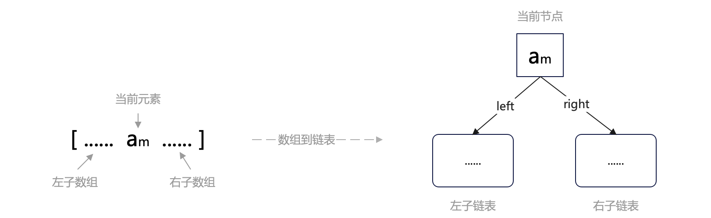
Building a binary search tree from a sorted array using binary search:
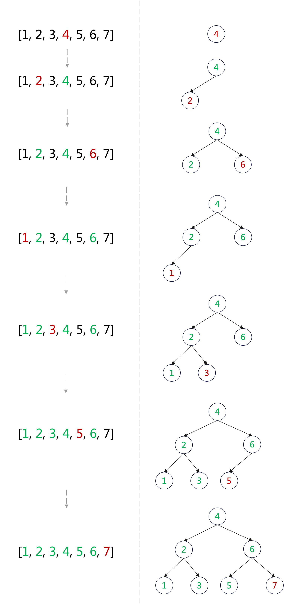
Searching in a Binary Search Tree
The search logic is identical to binary search — we just replace left/right sub-arrays with left/right subtrees.
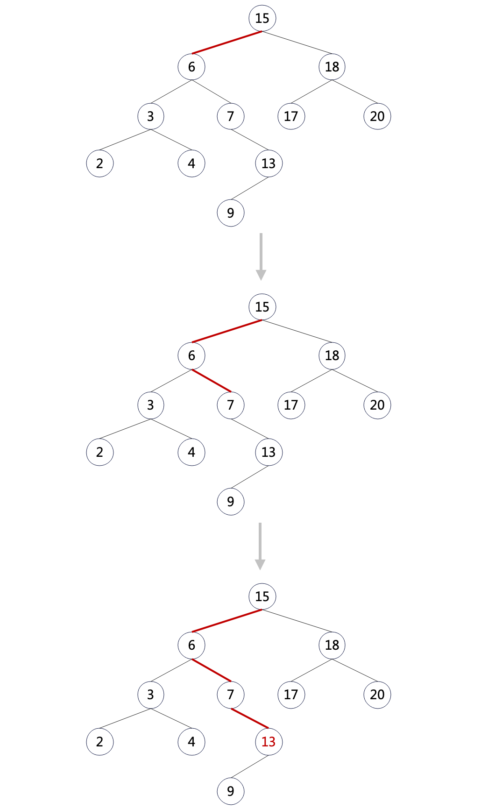
Special Search: Finding the Minimum
Start from the root and keep going left.
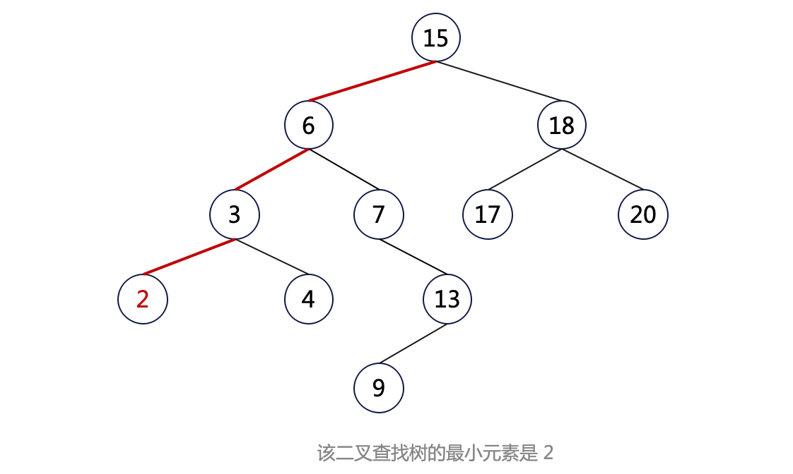
In-Order Traversal
In-order traversal: left subtree → root → right subtree.
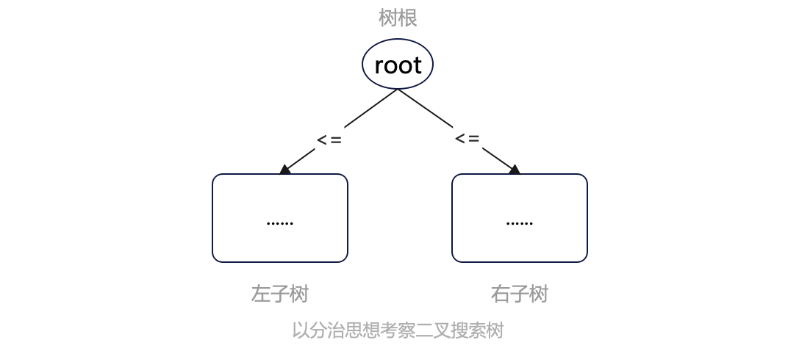
Range Queries
Add range constraints during traversal.
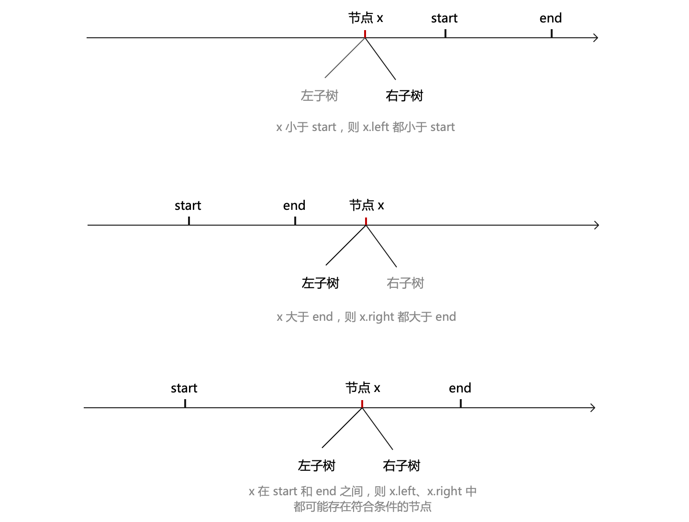
Insertion
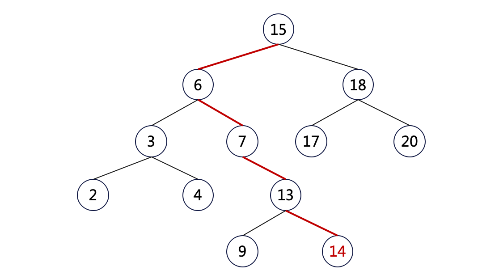
- Search for the position where the new node belongs;
- Insert the new node;
Time complexity: O(log n).
Deletion
Case 1: Deleting a leaf node.
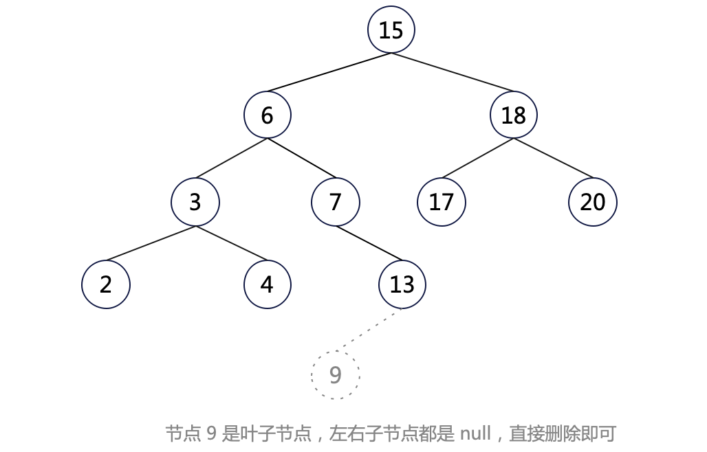
Case 2: The node to be deleted has only one child.
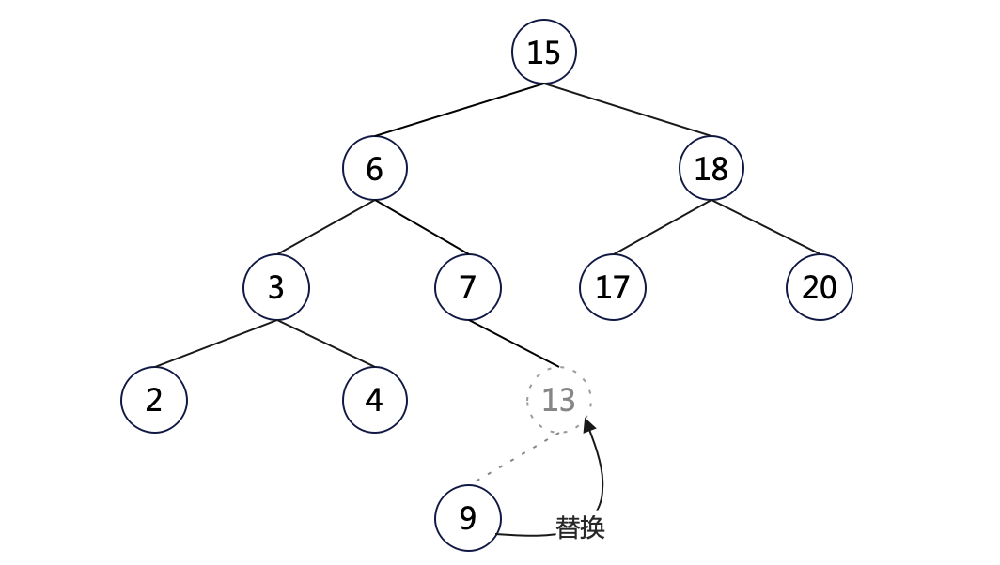
Case 3: The node to be deleted has both left and right children — replace it with the minimum node from its right subtree.
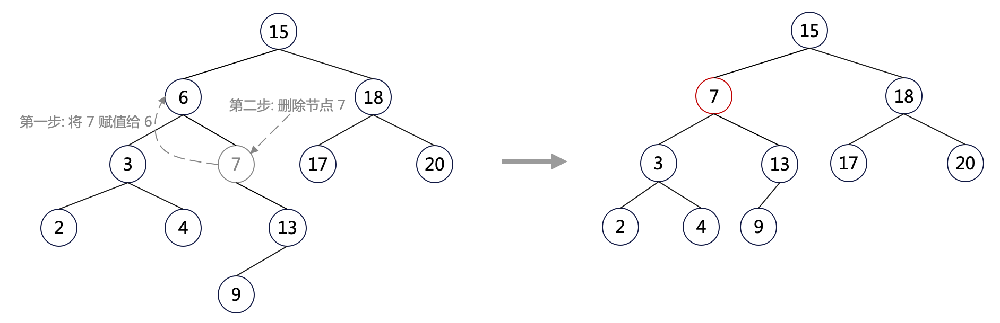
The Problem with Binary Search Trees
New nodes are always added at the bottom (as leaves), which tends to cause the tree to become skewed.
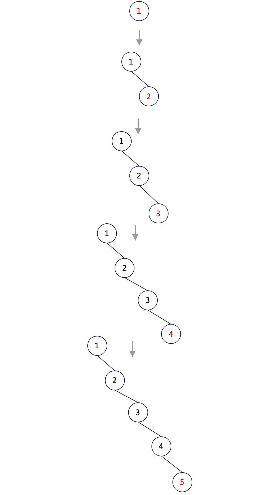
Summary
- Hash tables solve exact-match queries but cannot handle range queries;
- Binary search solves both exact-match and range queries but cannot handle insertions and deletions efficiently;
- Binary search trees solve all operations in O(log n);
- Binary search trees suffer from node skew;
- To fix the skew problem, we need balancing schemes: red-black trees, skip lists, and B-trees;